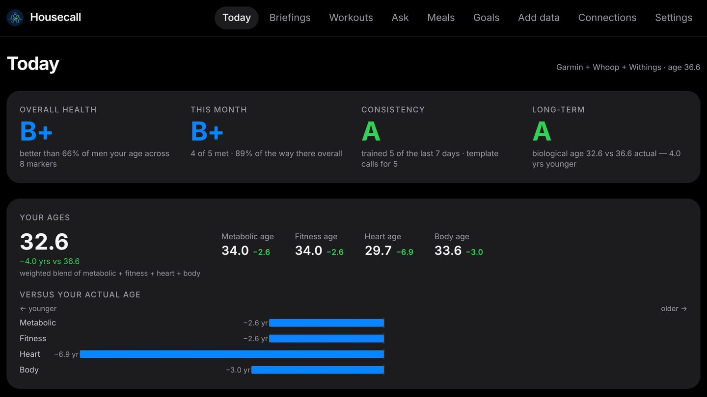

Housecall
Private personal toolYour doctor in the family.
- Problem
- My health data lived in four separate apps (Whoop, Garmin, Withings and an Omron blood-pressure cuff), and none of them connected the numbers to what I was trying to change.
- What it does
- Brings all four sources into one database and dashboard: body composition, 7-day averages and trends. Every morning it composes a brief on progress toward a long-term goal and the current month’s goals, written as a change from the previous day and delivered as a push notification. Meals are logged by photo or by typing what I ate.
- My contribution
- I defined the product: which devices to integrate, a two-tier goal system (one fixed long-term goal plus monthly goals I set myself), and the rule that every brief reports what changed since the last one. I set the design direction and run it on my own Android phone.
Built with Next.js · Prisma + SQLite · Android shell (Capacitor) · Railway

